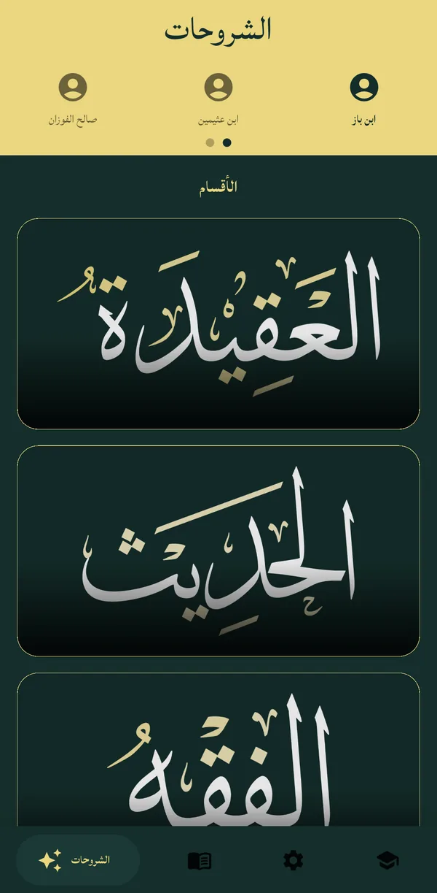
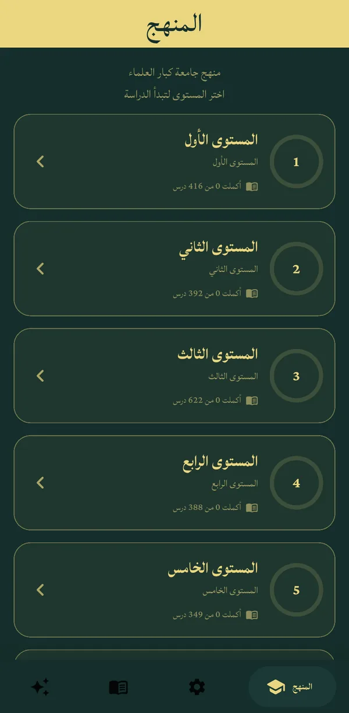

شروحات كبار العلماءLessons from the senior scholars
تسجيلات دروس ابن باز وابن عثيمين وصالح الفوزان وغيرهم، مرتبة حسب الفن والكتاب والدرس.
Recorded lessons of Ibn Baz, Ibn Uthaymeen, Salih al-Fawzan and others, arranged by subject, book and lesson.
لطلب العلم الشرعي على كبار العلماء Learn the Sunnah with the senior scholars
دروس كبار العلماء مرتبة حسب الكتاب والدرس، ومكتبة من الكتب والمتون العلمية تقرؤها وتحمّلها — وبضغطة واحدة تكمل من حيث توقفت.
Lessons from the senior scholars, organized by book and lesson, and a library of classical texts to read and download — then pick up exactly where you left off with a single tap.
بلا إعلانات · بلا تسجيل حساب · يعمل بلا إنترنت بعد التحميل No ads · No account needed · Works offline once downloaded

مشروع مبارك شارك فيه الكثيرون لإخراج تسجيلات العلماء الكبار منسقة حسب الكتاب والدرس.A community effort to bring the recordings of the senior scholars together, arranged by book and lesson.
تسجيلات دروس ابن باز وابن عثيمين وصالح الفوزان وغيرهم، مرتبة حسب الفن والكتاب والدرس.
Recorded lessons of Ibn Baz, Ibn Uthaymeen, Salih al-Fawzan and others, arranged by subject, book and lesson.
كتب في أربعة عشر فناً من المكتبة الشاملة، تقرؤها بصيغة PDF الأصلية أو نصاً قابلاً للتحديد والنسخ.
Books across 14 disciplines from al-Maktaba al-Shamila — read the original PDF, or as selectable, copyable text.
ثمانية مستويات متدرجة بأكثر من 3500 درس، مع متابعة ما أكملته في كل مستوى.
The Kibar Al-Ulama University curriculum: eight graded levels with over 3,500 lessons, tracking what you have completed.
حمّل الدروس الصوتية والكتب مرة واحدة، واستمع واقرأ في أي مكان دون اتصال.
Download audio lessons and books once, then listen and read anywhere without a connection.
يحفظ التطبيق موضعك في كل درس وكتاب، ويذكّرك يومياً بالمتابعة إن شئت.
Your place in every lesson and book is saved, with an optional daily reminder to keep going.
ميزة «تحسين الصوت» توضّح كلام الشيخ وتخفض الضوضاء وترفع الصوت الهادئ، مع التشغيل في الخلفية والانتقال التلقائي للدرس التالي.
Audio enhancement clarifies the speaker, reduces noise and lifts quiet passages — with background playback and auto-advance to the next lesson.

لا حساب، ولا إعلانات، ولا تتبع. تقدّمك وإعداداتك محفوظة على جهازك فقط.
No account, no ads, no tracking. Your progress and settings stay on your device.
حمّل التطبيق مجاناً وابدأ اليوم.
Download the app for free and start today.